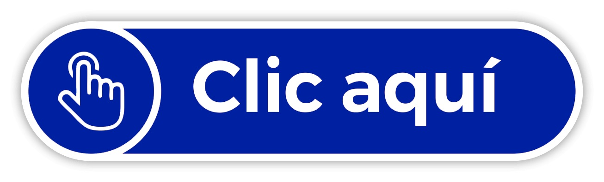

Es la rama de la ingenieria que se ocupa del estudio sistémico de la información y de los complementos de hardware y software que las personas y las organizaciones utilizan para recopilar, filtrar, procesar, crear y distribuir datos. Contempla una amplia área de trabajo, su trabajo profesional tiende hacia puestos directivos, principalmente en el área administrativa y de las TIC, como dirección de diversos tipos de proyectos, investigación y desarrollo de sistemas, asesoría, consultoría e informática funcional de la organización; para apoyar la automatización de toma de decisiones y procesos operativos.

Modelo de Formación
Malla Curricular

Menciones de la Carrera
Objetivos Educacionales del Programa
Resultados del Estudiante del Programa